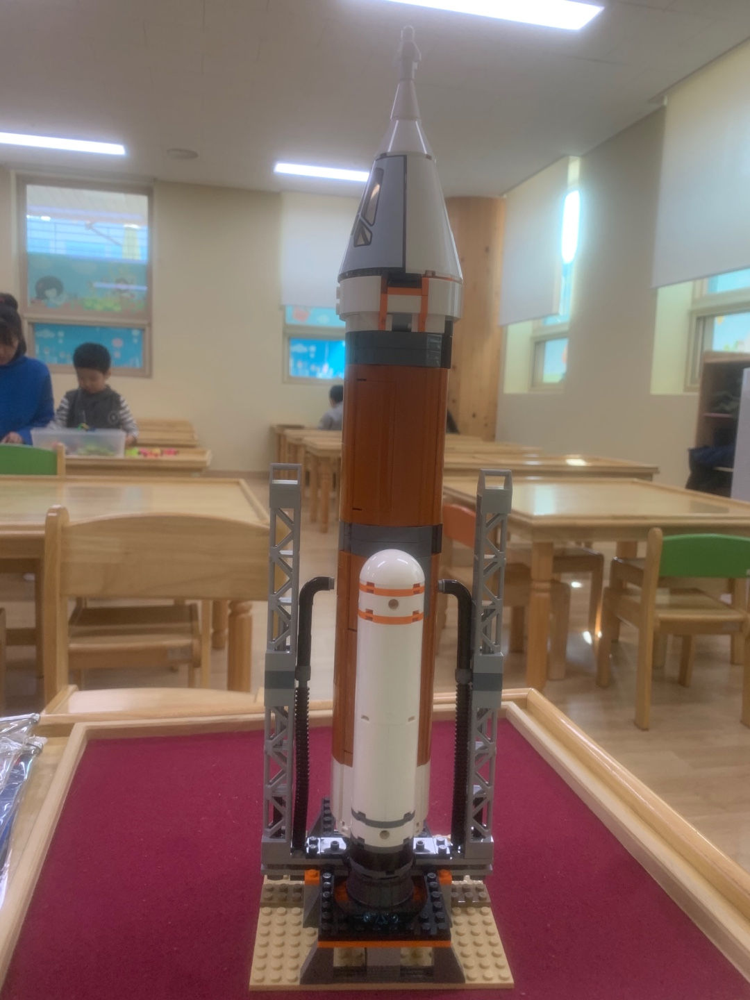

Drawing people
| 어렸을 때 소묘를 배워서 초상화를 많이 그렸었고, 요즘은 취미로 그리고 있다.
Assembling Lego & Computer
| 설명서를 보고 그대로 조립하면서 완성을 했을 때 뿌듯함을 느낀다.
- Lego
발사 관제소

로켓발사대
- Computer
조립 중
완성 후
Listening Music
| 장르 안 가리고 다 듣는 편이다. 숨은 명곡 찾는 걸 좋아한다.
- Charlie Puth - Look At Me Now
- DAY6 - 예뻤어
- 악동뮤지션 - Be With You
Watching Movie & Drama
| 자극적인 것 보다는 재미와 감동을 주는 작품을 선호한다.
- Movie
- Drama
- 슬기로운 의사생활(2020)
- 응답하라 1988(2015)